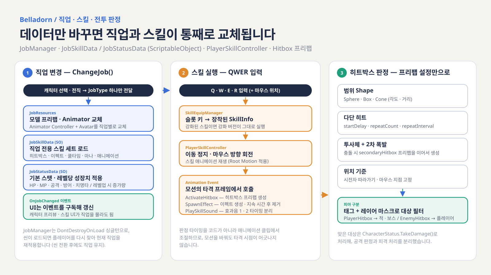

MY ROLE직업 · 스킬 · 전투 판정 · 플레이어 스탯 · 인벤토리 / 장비 · 퀘스트 · UI · 씬 흐름
ENGINE / PLATFORMUnity 2022.3.44f1 · PC
PROJECT OVERVIEW
직업 전환과 스킬 강화로 성장하는 액션 RPG를 만들자
Belladorn은 한림대학교 캡스톤디자인(졸업 프로젝트)으로 3인이 10주 동안 만든 쿼터뷰 액션 RPG입니다. Unity 기초 수업으로 게임 개발을 시작한 뒤 만든 프로젝트로, 저는 플레이어가 성장하는 모든 경로 — 직업, 스킬, 장비, 퀘스트 — 와 그것을 보여 주는 UI를 맡았습니다.
기능이 많은 만큼 “데이터만 추가하면 늘어나는 구조”를 목표로 했습니다. 직업 · 스킬 · 강화 · 아이템 · 퀘스트 · 조건을 모두 ScriptableObject로 정의하고, 판정 · 스탯 변경 · 진행도 갱신은 각각 하나의 경로로 모았습니다.
내가 맡은 일
직업 시스템 — JobType 하나로 모델 · 애니메이터 · 스킬 세트 · 스탯을 데이터로 교체
스킬 실행 · 히트박스 — 애니메이션 이벤트 타이밍 + Shape / 다단 히트 / 투사체 히트박스 프리팹
스킬 강화 · QWER 장착 — 포인트 레벨업 · 분기 강화 · 같은 계열 중복 장착 방지
인벤토리 · 장비 · 퀵슬롯 — 직업 제한 장비 · StatModifier 단일 경로 · 드래그 앤 드롭
퀘스트 · 대화 — 조건 SO 조합 · 이벤트 기반 진행 · 연계 퀘스트
씬 흐름 · 캐릭터 선택 — 4개 씬 · 매니저 유지 · 직업 선택 화면
프로젝트 정보
장르 — 쿼터뷰 RPG 액션
개발 기간 — 2025.03.17 – 2025.05.27 (약 10주)
팀 — 3인 · 한림대학교 2025학년도 1학기 캡스톤디자인
개발 환경 — Unity 2022.3.44f1, C#, URP, Input System, NavMesh
팀원 담당 — 적 · 보스 AI와 공격 패턴, 이동 · 입력 · 카메라, 맵
Unity 2022.3C#URPScriptableObjectAnimation EventRoot MotionuGUIDrag & DropRenderTextureInput System
THE GAME
한 생명을 대가로 불러낸, 과거의 영웅
봉인의 열쇠가 시간의 문을 열고, 한 생명을 대가로 과거의 영웅을 현재로 불러냅니다. 플레이어는 계승할 영웅(직업)을 골라 숲과 유적을 지나며 퀘스트를 수행하고, 챕터 1의 보스에 도전합니다.
마법사 직업의 QWER 스킬 전투챕터 1 보스전
진행 흐름
메인 메뉴→튜토리얼→유물 컷신→영웅(직업) 선택→챕터 1 · NPC 퀘스트→보스전
HERO
영웅 계승
튜토리얼을 마치면 계승할 영웅을 고릅니다. 직업마다 모델 · 애니메이션 · 스킬 세트 · 기본 스탯이 모두 달라집니다.
SKILL
QWER 스킬 빌드
레벨업으로 얻은 포인트로 스킬 레벨을 올리고, 갈라지는 강화 스킬 중 하나를 골라 QWER 슬롯에 자유롭게 배치합니다.
GEAR
장비와 소비 아이템
직업에 맞는 장비를 7부위에 장착하고, 포션과 버프 아이템을 퀵슬롯에 등록해 전투 중 사용합니다.
QUEST
NPC와 퀘스트
숲의 NPC와 대화하며 처치 · 수집 · 아이템 사용 · 지점 도달 퀘스트를 이어 받고, 끝에서 챕터 보스를 만납니다.

담당 시스템 한눈에 보기 — 직업 변경 · 스킬 실행 · 히트박스 판정 흐름
ENGINEERING NOTES
구현 사례
01
직업 시스템 — JobType 하나로 모든 것을 교체
직업 변경은 JobType 하나만 넘기면 모델 · 애니메이터 · 스킬 세트 · 스탯이 데이터(ScriptableObject)로 한 번에 바뀝니다.
영웅(직업) 선택 — 직업 설명 · 난이도 · 추천 대상 · 플레이 스타일
설계
데이터 분리 — 직업별 JobResources(모델 프리팹 · Animator Controller · Avatar), JobSkillData(스킬 세트), JobStatusData(기본 스탯 · 레벨당 성장치). 직업 추가는 데이터 추가로 처리
교체 순서 — 모델 → Animator · Avatar → 스킬 세트 → 상태 머신 Idle → 직업 스탯 → UI 갱신
이벤트 알림 — 교체가 끝나면 한 프레임 뒤 OnJobChanged 발행 → 캐릭터 프리뷰 · 스킬 UI가 새 모델 기준으로 갱신
씬 유지 — DontDestroyOnLoad 싱글턴, 씬이 로드되면 플레이어를 다시 찾아 현재 직업을 재적용
직업 하나로 모델 · 애니메이터 · 스킬 · 스탯을 함께 교체 (발췌) JobManager.cs
public void ChangeJob(JobType newJob)
{
currentJob = newJob;
var res = jobResourcesDict[newJob];
if (currentModel != null) Destroy(currentModel);
currentModel = Instantiate(res.modelPrefab, modelParent); // 1. 모델
playerAnimator.runtimeAnimatorController = res.animatorController; // 2. 애니메이터
playerAnimator.avatar = res.avatar;
if (GetSkillData(newJob) is JobSkillData skillData)
playerSkill.LoadSkillsFromData(skillData); // 3. 스킬 세트
stateMachine.ChangeState(PlayerStateMachine.PlayerState.Idle);
playerStatus.ApplyJobStats(GetStatData(newJob)); // 4. 직업 스탯
playerStatus.UpdateAllUI();
StartCoroutine(InvokeJobChangedDelayed(newJob)); // 5. 한 프레임 뒤 OnJobChanged
}
장비와 소비 아이템 버프가 같은 스탯 변경 경로(StatModifier)를 쓰게 해서, 적용과 해제가 항상 대칭이 되도록 구성했습니다.
장비 착용 → 체력 · 치명타 등 능력치 즉시 반영인벤토리의 포션을 퀵슬롯으로 드래그해 등록
설계
내용
아이템 데이터
ItemData(SO)를 상속해 EquipmentData(7부위 · 착용 가능 직업 · StatModifier 목록), ConsumableData(체력 · 마나 회복 · 공격 / 방어 버프 · 지속 회복)로 확장
인벤토리
48칸 · 같은 아이템은 최대 스택까지 합치고 남은 수량은 빈 칸에 · 획득 시 퀘스트 CollectItem 조건 갱신
장비
착용 가능 직업 확인 → 같은 부위 기존 장비 해제 → StatModifier 적용 / 해제 시 같은 값을 음수로 되돌림
스탯 경로 통일
장비 · 소비 버프 모두 StatusEffectApplier로 스탯을 바꿔, 어디서 바꿨든 같은 방식으로 되돌릴 수 있음
퀵슬롯
1 ~ 4 키로 소비 아이템 사용 → 수량 차감 → 퀘스트 UseItem 조건 갱신
UI
인벤토리 ↔ 장비 ↔ 퀵슬롯 드래그 앤 드롭 · 툴팁 · 창 헤더 드래그 이동 · 현재 직업 모델을 비추는 캐릭터 프리뷰(RenderTexture)
장착은 StatModifier 적용, 해제는 같은 값을 음수로 (발췌) EquipmentManager.cs
public void EquipItem(EquipmentData equipment)
{
if (!equipment.allowedJobs.Contains(JobManager.Instance.GetCurrentJob())) return; // 직업 제한
if (equippedItems.TryGetValue(equipment.equipmentType, out var oldEquip))
UnequipItem(oldEquip); // 같은 부위 교체
equippedItems[equipment.equipmentType] = equipment;
var modifiers = equipment.GetAllStatModifiers();
appliedModifiers[equipment.equipmentType] = new List<StatModifier>(modifiers);
StatusEffectApplier.ApplyStatModifiers(playerStatus, modifiers);
}
public void UnequipItem(EquipmentData item)
{
var negativeMods = new List<StatModifier>();
foreach (var mod in appliedModifiers[item.equipmentType])
negativeMods.Add(new StatModifier(mod.type, -mod.value, mod.isFlat));
StatusEffectApplier.ApplyStatModifiers(playerStatus, negativeMods);
// ...
}